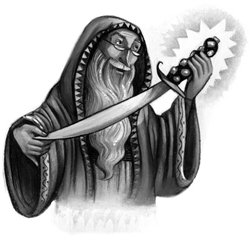

For a moment there was silence as Harry, Ron, Ginny, and Lockhart stood in the doorway, covered in muck and slime and (in Harry’s case) blood. Then there was a scream.
“Ginny!”
It was Mrs. Weasley, who had been sitting crying in front of the fire. She leapt to her feet, closely followed by Mr. Weasley, and both of them flung themselves on their daughter.
Harry, however, was looking past them. Professor Dumbledore was standing by the mantelpiece, beaming, next to Professor McGonagall, who was taking great, steadying gasps, clutching her chest. Fawkes went whooshing past Harry’s ear and settled on Dumbledore’s shoulder, just as Harry found himself and Ron being swept into Mrs. Weasley’s tight embrace.
“You saved her! You saved her! How did you do it?”
“I think we’d all like to know that,” said Professor McGonagall weakly.
Mrs. Weasley let go of Harry, who hesitated for a moment, then walked over to the desk and laid upon it the Sorting Hat, the ruby-encrusted sword, and what remained of Riddle’s diary.
Then he started telling them everything. For nearly a quarter of an hour he spoke into the rapt silence: He told them about hearing the disembodied voice, how Hermione had finally realized that he was hearing a basilisk in the pipes; how he and Ron had followed the spiders into the forest, that Aragog had told them where the last victim of the basilisk had died; how he had guessed that Moaning Myrtle had been the victim, and that the entrance to the Chamber of Secrets might be in her bathroom. . . .
“Very well,” Professor McGonagall prompted him as he paused, “so you found out where the entrance was — breaking a hundred school rules into pieces along the way, I might add — but how on earth did you all get out of there alive, Potter?”
So Harry, his voice now growing hoarse from all this talking, told them about Fawkes’s timely arrival and about the Sorting Hat giving him the sword. But then he faltered. He had so far avoided mentioning Riddle’s diary — or Ginny. She was standing with her head against Mrs. Weasley’s shoulder, and tears were still coursing silently down her cheeks. What if they expelled her? Harry thought in panic. Riddle’s diary didn’t work anymore. . . . How could they prove it had been he who’d made her do it all?
Instinctively, Harry looked at Dumbledore, who smiled faintly, the firelight glancing off his half-moon spectacles.
“What interests me most,” said Dumbledore gently, “is how Lord Voldemort managed to enchant Ginny, when my sources tell me he is currently in hiding in the forests of Albania.”
Relief — warm, sweeping, glorious relief — swept over Harry.
“W-what’s that?” said Mr. Weasley in a stunned voice. “You-Know-Who? En-enchant Ginny? But Ginny’s not . . . Ginny hasn’t been . . . has she?”
“It was this diary,” said Harry quickly, picking it up and showing it to Dumbledore. “Riddle wrote it when he was sixteen. . . .”
Dumbledore took the diary from Harry and peered keenly down his long, crooked nose at its burnt and soggy pages.
“Brilliant,” he said softly. “Of course, he was probably the most brilliant student Hogwarts has ever seen.” He turned around to the Weasleys, who were looking utterly bewildered.
“Very few people know that Lord Voldemort was once called Tom Riddle. I taught him myself, fifty years ago, at Hogwarts. He disappeared after leaving the school . . . traveled far and wide . . . sank so deeply into the Dark Arts, consorted with the very worst of our kind, underwent so many dangerous, magical transformations, that when he resurfaced as Lord Voldemort, he was barely recognizable. Hardly anyone connected Lord Voldemort with the clever, handsome boy who was once Head Boy here.”
“But, Ginny,” said Mrs. Weasley. “What’s our Ginny got to do with — with — him?”
“His d-diary!” Ginny sobbed. “I’ve b-been writing in it, and he’s been w-writing back all year —”
“Ginny!” said Mr. Weasley, flabbergasted. “Haven’t I taught you anything? What have I always told you? Never trust anything that can think for itself if you can’t see where it keeps its brain. Why didn’t you show the diary to me, or your mother? A suspicious object like that, it was clearly full of Dark Magic —”
“I d-didn’t know,” sobbed Ginny. “I found it inside one of the books Mum got me. I th-thought someone had just left it in there and forgotten about it —”
“Miss Weasley should go up to the hospital wing right away,” Dumbledore interrupted in a firm voice. “This has been a terrible ordeal for her. There will be no punishment. Older and wiser wizards than she have been hoodwinked by Lord Voldemort.” He strode over to the door and opened it. “Bed rest and perhaps a large, steaming mug of hot chocolate. I always find that cheers me up,” he added, twinkling kindly down at her. “You will find that Madam Pomfrey is still awake. She’s just giving out Mandrake juice — I daresay the basilisk’s victims will be waking up any moment.”
“So Hermione’s okay!” said Ron brightly.
“There has been no lasting harm done, Ginny,” said Dumbledore.
Mrs. Weasley led Ginny out, and Mr. Weasley followed, still looking deeply shaken.
“You know, Minerva,” Professor Dumbledore said thoughtfully to Professor McGonagall, “I think all this merits a good feast. Might I ask you to go and alert the kitchens?”
“Right,” said Professor McGonagall crisply, also moving to the door. “I’ll leave you to deal with Potter and Weasley, shall I?”
“Certainly,” said Dumbledore.
She left, and Harry and Ron gazed uncertainly at Dumbledore. What exactly had Professor McGonagall meant, deal with them? Surely — surely — they weren’t about to be punished?
“I seem to remember telling you both that I would have to expel you if you broke any more school rules,” said Dumbledore.
Ron opened his mouth in horror.
“Which goes to show that the best of us must sometimes eat our words,” Dumbledore went on, smiling. “You will both receive Special Awards for Services to the School and — let me see — yes, I think two hundred points apiece for Gryffindor.”
Ron went as brightly pink as Lockhart’s valentine flowers and closed his mouth again.
“But one of us seems to be keeping mightily quiet about his part in this dangerous adventure,” Dumbledore added. “Why so modest, Gilderoy?”
Harry gave a start. He had completely forgotten about Lockhart. He turned and saw that Lockhart was standing in a corner of the room, still wearing his vague smile. When Dumbledore addressed him, Lockhart looked over his shoulder to see who he was talking to.
“Professor Dumbledore,” Ron said quickly, “there was an accident down in the Chamber of Secrets. Professor Lockhart —”
“Am I a professor?” said Lockhart in mild surprise. “Goodness. I expect I was hopeless, was I?”
“He tried to do a Memory Charm and the wand backfired,” Ron explained quietly to Dumbledore.
“Dear me,” said Dumbledore, shaking his head, his long silver mustache quivering. “Impaled upon your own sword, Gilderoy!”
“Sword?” said Lockhart dimly. “Haven’t got a sword. That boy has, though.” He pointed at Harry. “He’ll lend you one.”
“Would you mind taking Professor Lockhart up to the infirmary, too?” Dumbledore said to Ron. “I’d like a few more words with Harry. . . .”
Lockhart ambled out. Ron cast a curious look back at Dumbledore and Harry as he closed the door.
Dumbledore crossed to one of the chairs by the fire.
“Sit down, Harry,” he said, and Harry sat, feeling unaccountably nervous.
“First of all, Harry, I want to thank you,” said Dumbledore, eyes twinkling again. “You must have shown me real loyalty down in the Chamber. Nothing but that could have called Fawkes to you.”
He stroked the phoenix, which had fluttered down onto his knee. Harry grinned awkwardly as Dumbledore watched him.
“And so you met Tom Riddle,” said Dumbledore thoughtfully. “I imagine he was most interested in you. . . .”
Suddenly, something that was nagging at Harry came tumbling out of his mouth.
“Professor Dumbledore . . . Riddle said I’m like him. Strange likenesses, he said. . . .”
“Did he, now?” said Dumbledore, looking thoughtfully at Harry from under his thick silver eyebrows. “And what do you think, Harry?”
“I don’t think I’m like him!” said Harry, more loudly than he’d intended. “I mean, I’m — I’m in Gryffindor, I’m . . .”
But he fell silent, a lurking doubt resurfacing in his mind.
“Professor,” he started again after a moment. “The Sorting Hat told me I’d — I’d have done well in Slytherin. Everyone thought I was Slytherin’s heir for a while . . . because I can speak Parseltongue. . . .”
“You can speak Parseltongue, Harry,” said Dumbledore calmly, “because Lord Voldemort — who is the last remaining descendant of Salazar Slytherin — can speak Parseltongue. Unless I’m much mistaken, he transferred some of his own powers to you the night he gave you that scar. Not something he intended to do, I’m sure. . . .”
“Voldemort put a bit of himself in me?” Harry said, thunderstruck.
“It certainly seems so.”
“So I should be in Slytherin,” Harry said, looking desperately into Dumbledore’s face. “The Sorting Hat could see Slytherin’s power in me, and it —”
“Put you in Gryffindor,” said Dumbledore calmly. “Listen to me, Harry. You happen to have many qualities Salazar Slytherin prized in his hand-picked students. His own very rare gift, Parseltongue — resourcefulness — determination — a certain disregard for rules,” he added, his mustache quivering again. “Yet the Sorting Hat placed you in Gryffindor. You know why that was. Think.”
“It only put me in Gryffindor,” said Harry in a defeated voice, “because I asked not to go in Slytherin. . . .”
“Exactly,” said Dumbledore, beaming once more. “Which makes you very different from Tom Riddle. It is our choices, Harry, that show what we truly are, far more than our abilities.” Harry sat motionless in his chair, stunned. “If you want proof, Harry, that you belong in Gryffindor, I suggest you look more closely at this.”
Dumbledore reached across to Professor McGonagall’s desk, picked up the blood-stained silver sword, and handed it to Harry. Dully, Harry turned it over, the rubies blazing in the firelight. And then he saw the name engraved just below the hilt.
Godric Gryffindor.
“Only a true Gryffindor could have pulled that out of the hat, Harry,” said Dumbledore simply.
For a minute, neither of them spoke. Then Dumbledore pulled open one of the drawers in Professor McGonagall’s desk and took out a quill and a bottle of ink.
“What you need, Harry, is some food and sleep. I suggest you go down to the feast, while I write to Azkaban — we need our gamekeeper back. And I must draft an advertisement for the Daily Prophet, too,” he added thoughtfully. “We’ll be needing a new Defense Against the Dark Arts teacher. . . . Dear me, we do seem to run through them, don’t we?”
Harry got up and crossed to the door. He had just reached for the handle, however, when the door burst open so violently that it bounced back off the wall.
Lucius Malfoy stood there, fury in his face. And cowering behind his legs, heavily wrapped in bandages, was Dobby.
“Good evening, Lucius,” said Dumbledore pleasantly.
Mr. Malfoy almost knocked Harry over as he swept into the room. Dobby went scurrying in after him, crouching at the hem of his cloak, a look of abject terror on his face.
The elf was carrying a stained rag with which he was attempting to finish cleaning Mr. Malfoy’s shoes. Apparently Mr. Malfoy had set out in a great hurry, for not only were his shoes half-polished, but his usually sleek hair was disheveled. Ignoring the elf bobbing apologetically around his ankles, he fixed his cold eyes upon Dumbledore.
“So!” he said “You’ve come back. The governors suspended you, but you still saw fit to return to Hogwarts.”
“Well, you see, Lucius,” said Dumbledore, smiling serenely, “the other eleven governors contacted me today. It was something like being caught in a hailstorm of owls, to tell the truth. They’d heard that Arthur Weasley’s daughter had been killed and wanted me back here at once. They seemed to think I was the best man for the job after all. Very strange tales they told me, too. . . . Several of them seemed to think that you had threatened to curse their families if they didn’t agree to suspend me in the first place.”
Mr. Malfoy went even paler than usual, but his eyes were still slits of fury.
“So — have you stopped the attacks yet?” he sneered. “Have you caught the culprit?”
“We have,” said Dumbledore, with a smile.
“Well?” said Mr. Malfoy sharply. “Who is it?”
“The same person as last time, Lucius,” said Dumbledore. “But this time, Lord Voldemort was acting through somebody else. By means of this diary.”
He held up the small black book with the large hole through the center, watching Mr. Malfoy closely. Harry, however, was watching Dobby.
The elf was doing something very odd. His great eyes fixed meaningfully on Harry, he kept pointing at the diary, then at Mr. Malfoy, and then hitting himself hard on the head with his fist.
“I see . . .” said Mr. Malfoy slowly to Dumbledore.
“A clever plan,” said Dumbledore in a level voice, still staring Mr. Malfoy straight in the eye. “Because if Harry here” — Mr. Malfoy shot Harry a swift, sharp look — “and his friend Ron hadn’t discovered this book, why — Ginny Weasley might have taken all the blame. No one would ever have been able to prove she hadn’t acted of her own free will. . . .”
Mr. Malfoy said nothing. His face was suddenly masklike.
“And imagine,” Dumbledore went on, “what might have happened then. . . . The Weasleys are one of our most prominent pure-blood families. Imagine the effect on Arthur Weasley and his Muggle Protection Act, if his own daughter was discovered attacking and killing Muggle-borns. . . . Very fortunate the diary was discovered, and Riddle’s memories wiped from it. Who knows what the consequences might have been otherwise. . . .”
Mr. Malfoy forced himself to speak.
“Very fortunate,” he said stiffly.
And still, behind his back, Dobby was pointing, first to the diary, then to Lucius Malfoy, then punching himself in the head.
And Harry suddenly understood. He nodded at Dobby, and Dobby backed into a corner, now twisting his ears in punishment.
“Don’t you want to know how Ginny got hold of that diary, Mr. Malfoy?” said Harry.
Lucius Malfoy rounded on him.
“How should I know how the stupid little girl got hold of it?” he said.
“Because you gave it to her,” said Harry. “In Flourish and Blotts. You picked up her old Transfiguration book and slipped the diary inside it, didn’t you?”
He saw Mr. Malfoy’s white hands clench and unclench.
“Prove it,” he hissed.
“Oh, no one will be able to do that,” said Dumbledore, smiling at Harry. “Not now that Riddle has vanished from the book. On the other hand, I would advise you, Lucius, not to go giving out any more of Lord Voldemort’s old school things. If any more of them find their way into innocent hands, I think Arthur Weasley, for one, will make sure they are traced back to you. . . .”
Lucius Malfoy stood for a moment, and Harry distinctly saw his right hand twitch as though he was longing to reach for his wand. Instead, he turned to his house-elf.
“We’re going, Dobby!”
He wrenched open the door and as the elf came hurrying up to him, he kicked him right through it. They could hear Dobby squealing with pain all the way along the corridor. Harry stood for a moment, thinking hard. Then it came to him —
“Professor Dumbledore,” he said hurriedly. “Can I give that diary back to Mr. Malfoy, please?”
“Certainly, Harry,” said Dumbledore calmly. “But hurry. The feast, remember. . . .”
Harry grabbed the diary and dashed out of the office. He could hear Dobby’s squeals of pain receding around the corner. Quickly, wondering if this plan could possibly work, Harry took off one of his shoes, pulled off his slimy, filthy sock, and stuffed the diary into it. Then he ran down the dark corridor.
He caught up with them at the top of the stairs.
“Mr. Malfoy,” he gasped, skidding to a halt, “I’ve got something for you —”
And he forced the smelly sock into Lucius Malfoy’s hand.
“What the — ?”
Mr. Malfoy ripped the sock off the diary, threw it aside, then looked furiously from the ruined book to Harry.
“You’ll meet the same sticky end as your parents one of these days, Harry Potter,” he said softly. “They were meddlesome fools, too.”
He turned to go.
“Come, Dobby. I said, come.”
But Dobby didn’t move. He was holding up Harry’s disgusting, slimy sock, and looking at it as though it were a priceless treasure.
“Master has given a sock,” said the elf in wonderment. “Master gave it to Dobby.”
“What’s that?” spat Mr. Malfoy. “What did you say?”
“Got a sock,” said Dobby in disbelief. “Master threw it, and Dobby caught it, and Dobby — Dobby is free.”
Lucius Malfoy stood frozen, staring at the elf. Then he lunged at Harry.
“You’ve lost me my servant, boy!”
But Dobby shouted, “You shall not harm Harry Potter!”
There was a loud bang, and Mr. Malfoy was thrown backward. He crashed down the stairs, three at a time, landing in a crumpled heap on the landing below. He got up, his face livid, and pulled out his wand, but Dobby raised a long, threatening finger.
“You shall go now,” he said fiercely, pointing down at Mr. Malfoy. “You shall not touch Harry Potter. You shall go now.”
Lucius Malfoy had no choice. With a last, incensed stare at the pair of them, he swung his cloak around him and hurried out of sight.
“Harry Potter freed Dobby!” said the elf shrilly, gazing up at Harry, moonlight from the nearest window reflected in his orb-like eyes. “Harry Potter set Dobby free!”
“Least I could do, Dobby,” said Harry, grinning. “Just promise never to try and save my life again.”
The elf’s ugly brown face split suddenly into a wide, toothy smile.
“I’ve just got one question, Dobby,” said Harry as Dobby pulled on Harry’s sock with shaking hands. “You told me all this had nothing to do with He-Who-Must-Not-Be-Named, remember? Well —”
“It was a clue, sir,” said Dobby, his eyes widening, as though this was obvious. “Was giving you a clue. The Dark Lord, before he changed his name, could be freely named, you see?”
“Right,” said Harry weakly. “Well, I’d better go. There’s a feast, and my friend Hermione should be awake by now. . . .”
Dobby threw his arms around Harry’s middle and hugged him.
“Harry Potter is greater by far than Dobby knew!” he sobbed. “Farewell, Harry Potter!”
And with a final loud crack, Dobby disappeared.
Harry had been to several Hogwarts feasts, but never one quite like this. Everybody was in their pajamas, and the celebration lasted all night. Harry didn’t know whether the best bit was Hermione running toward him, screaming “You solved it! You solved it!” or Justin hurrying over from the Hufflepuff table to wring his hand and apologize endlessly for suspecting him, or Hagrid turning up at half past three, cuffing Harry and Ron so hard on the shoulders that they were knocked into their plates of trifle, or his and Ron’s four hundred points for Gryffindor securing the House Cup for the second year running, or Professor McGonagall standing up to tell them all that the exams had been canceled as a school treat (“Oh, no!” said Hermione), or Dumbledore announcing that, unfortunately, Professor Lockhart would be unable to return next year, owing to the fact that he needed to go away and get his memory back. Quite a few of the teachers joined in the cheering that greeted this news.
“Shame,” said Ron, helping himself to a jam doughnut. “He was starting to grow on me.”
The rest of the final term passed in a haze of blazing sunshine. Hogwarts was back to normal with only a few, small differences. Defense Against the Dark Arts classes were canceled (“but we’ve had plenty of practice at that anyway,” Ron told a disgruntled Hermione) and Lucius Malfoy had been sacked as a school governor. Draco was no longer strutting around the school as though he owned the place. On the contrary, he looked resentful and sulky. On the other hand, Ginny Weasley was perfectly happy again.
Too soon, it was time for the journey home on the Hogwarts Express. Harry, Ron, Hermione, Fred, George, and Ginny got a compartment to themselves. They made the most of the last few hours in which they were allowed to do magic before the holidays. They played Exploding Snap, set off the very last of Fred and George’s Filibuster fireworks, and practiced Disarming each other by magic. Harry was getting very good at it.
They were almost at King’s Cross when Harry remembered something.
“Ginny — what did you see Percy doing, that he didn’t want you to tell anyone?”
“Oh, that,” said Ginny, giggling. “Well — Percy’s got a girlfriend.”
Fred dropped a stack of books on George’s head.
“What?”
“It’s that Ravenclaw prefect, Penelope Clearwater,” said Ginny. “That’s who he was writing to all last summer. He’s been meeting her all over the school in secret. I walked in on them kissing in an empty classroom one day. He was so upset when she was — you know — attacked. You won’t tease him, will you?” she added anxiously.
“Wouldn’t dream of it,” said Fred, who was looking like his birthday had come early.
“Definitely not,” said George, sniggering.
The Hogwarts Express slowed and finally stopped.
Harry pulled out his quill and a bit of parchment and turned to Ron and Hermione.
“This is called a telephone number,” he told Ron, scribbling it twice, tearing the parchment in two, and handing it to them. “I told your dad how to use a telephone last summer — he’ll know. Call me at the Dursleys’, okay? I can’t stand another two months with only Dudley to talk to. . . .”
“Your aunt and uncle will be proud, though, won’t they?” said Hermione as they got off the train and joined the crowd thronging toward the enchanted barrier. “When they hear what you did this year?”
“Proud?” said Harry. “Are you crazy? All those times I could’ve died, and I didn’t manage it? They’ll be furious. . . .”
And together they walked back through the gateway to the Muggle world.